Département : Ingénierie Informatique et Réseaux (IIR)
3ème année — Cycle Ingénieur
RAPPORT DE STAGE
Réalisé au sein de la société SIRECOM
MAINTENX
Application de gestion des interventions de maintenance
| Réalisé par | M. Othmane LAADIOUI |
|---|---|
| Encadrante académique | Mme Safaa FOUAD (EMSI) |
| Encadrants de stage | M. Anass EL GHAZI (SIRECOM) |
| Encadrant de stage | M. Youness DRISSI (SIRECOM) |
| Période de stage | Six semaines |
Avant tout développement, il m'est agréable d'exprimer ma profonde gratitude à toutes les personnes qui ont contribué, de près ou de loin, à la réussite de ce projet de fin d'études.
Je tiens tout d'abord à remercier l'École Marocaine des Sciences de l'Ingénieur (EMSI) pour la qualité de la formation qui m'a été dispensée et pour m'avoir offert l'opportunité d'effectuer un stage au sein d'une entreprise réputée dans le domaine des systèmes d'information.
Mes sincères remerciements vont à Mme Safaa FOUAD, mon encadrante académique, pour son encadrement pédagogique, ses conseils avisés, sa disponibilité et son suivi régulier tout au long de la réalisation de ce projet.
Je remercie chaleureusement M. Anass EL GHAZI et M. Youness DRISSI, mes encadrants au sein de la société SIRECOM, pour leur accueil, leur confiance, leur encadrement technique de qualité et pour toutes les connaissances professionnelles qu'ils m'ont transmises durant ces six semaines de stage.
Je remercie également l'ensemble du personnel de la société SIRECOM pour son accueil chaleureux et sa collaboration, ainsi que tous mes enseignants de l'EMSI qui ont contribué à ma formation.
Enfin, je dédie ce travail à ma famille et à mes proches pour leur soutien moral inconditionnel tout au long de mes études.
Dans le cadre de mon projet de fin d'études effectué au sein de la société SIRECOM, j'ai conçu et développé MaintenX, une application de bureau en Java Swing dédiée à la gestion des interventions de maintenance. Le projet répond à une problématique concrète : la gestion des demandes d'intervention était réalisée de manière manuelle (cahiers, tableurs Excel, échanges téléphoniques), ce qui engendrait des pertes d'information, une mauvaise priorisation des urgences, des affectations de techniciens peu efficaces et l'absence d'historique fiable.
MaintenX permet d'automatiser l'ensemble du cycle de vie d'une intervention de maintenance : création de la demande, affectation d'un technicien, suivi du statut (ouverte, affectée, en cours, en attente, terminée, annulée), enregistrement des diagnostics et des solutions, clôture avec coûts associés, recherche multicritère, tableau de bord statistique et journal d'activité. L'application repose sur une architecture multicouche Vue → Contrôleur → Service → DAO → MySQL qui garantit la séparation des responsabilités et la maintenabilité du code. Les mots de passe sont sécurisés par hachage BCrypt et chaque action sensible est tracée dans un historique.
Le résultat final est une application complète, testée et documentée, livrée sous forme d'un JAR exécutable avec un jeu de données de démonstration intégré pour faciliter la soutenance.
Mots-clés : gestion de maintenance, application de bureau, Java, Swing, JDBC, MySQL, architecture multicouche, UML, tests unitaires.
As part of my end-of-studies project carried out within SIRECOM company, I designed and developed MaintenX, a Java Swing desktop application dedicated to maintenance intervention management. The project addresses a concrete issue: intervention requests were handled manually (notebooks, Excel spreadsheets, phone calls), which led to information loss, poor prioritisation of urgent requests, inefficient technician assignment and the lack of a reliable history.
MaintenX automates the whole lifecycle of a maintenance intervention: request creation, technician assignment, status tracking (open, assigned, in progress, on hold, completed, cancelled), diagnostics and solutions recording, closure with related costs, multi-criteria search, statistics dashboard and activity log. The application relies on a multi-layered architecture View → Controller → Service → DAO → MySQL which guarantees separation of concerns and code maintainability. Passwords are secured with BCrypt hashing and every sensitive action is traced in a history log.
The final result is a complete, tested and documented application, delivered as an executable JAR with an embedded demonstration dataset for easy defence presentation.
Keywords: maintenance management, desktop application, Java, Swing, JDBC, MySQL, multi-layered architecture, UML, unit testing.
Figure 1 : Cas d'utilisation global — partie 1/3 (authentification, utilisateurs, techniciens)
Figure 2 : Cas d'utilisation global — partie 2/3 (gestion des interventions)
Figure 3 : Cas d'utilisation global — partie 3/3 (recherche, tableau de bord, suivi)
Figure 4 : Cas d'utilisation - Administrateur
Figure 5 : Cas d'utilisation - Responsable
Figure 6 : Cas d'utilisation - Technicien
Figure 7 : Cas d'utilisation - Gestion des utilisateurs (détail)
Figure 8 : Diagramme des classes métier
Figure 9 : Architecture globale des classes
Figure 10 : Diagramme des classes Controller
Figure 11 : Diagramme des classes Service
Figure 12 : Diagramme des classes DAO
Figure 16 : Diagramme de séquence - Changement de statut
Figure 20 : Diagramme de séquence - Cycle de vie global d'une intervention
Figure 23 : Diagramme de composants
Figure 24 : Diagramme de déploiement
Figure 25 : Modèle Conceptuel de Données (MCD)
Figure 26 : Organisation des packages
Figure 27 : Écran de connexion
Figure 28 : Tableau de bord principal
Figure 29 : Écran de gestion des utilisateurs
Figure 30 : Écran de gestion des techniciens
Figure 31 : Liste des interventions
Figure 32 : Recherche avancée
Figure 33 : Historique d'une intervention
Figure 34 : Journal d'activité
Figure 35 : Rapport des interventions
Figure 36 : Profil utilisateur
Figure 37 : Paramètres de l'application
Figure 38 : Vue technicien — interventions affectées
Tableau 1 : Du processus métier aux fonctionnalités
Tableau 2 : Comparaison des solutions existantes
Tableau 3 : Besoins non fonctionnels
Tableau 4 : Analyse des risques du projet
Tableau 5 : Planning des six semaines de stage
Tableau 6 : Les acteurs du système
Tableau 7 : Matrice des fonctionnalités par acteur
Tableau 8 : Fiches synthétiques des cas d'utilisation
Tableau 9 : Récapitulatif des diagrammes produits
Tableau 10 : Principales classes et leurs responsabilités
Tableau 11 : Transitions de statut autorisées
Tableau 12 : Récapitulatif des relations et de leurs contraintes
Tableau 13 : Dictionnaire de données (extrait)
Tableau 14 : Environnement de développement
Tableau 15 : Les services et leurs responsabilités
Tableau 16 : Contrats DAO et méthodes spécifiques
Tableau 17 : Organisation de la couche présentation
Tableau 18 : Couverture des tests unitaires
Tableau 19 : Résultats des tests et de la construction
Tableau 20 : Détail des tests métier (ServiceRulesTest)
Tableau 21 : Couverture de la validation par couche
Tableau 22 : Plan de tests fonctionnels (extrait)
Tableau 23 : Checklist d'acceptation
Tableau 24 : Difficultés rencontrées et solutions apportées
Tableau 25 : Comptes de démonstration
Tableau 26 : Glossaire des termes du projet
Tableau 27 : Commandes Maven de construction et de lancement
| Abréviation | Signification |
|---|---|
| AWT | Abstract Window Toolkit (bibliothèque graphique Java) |
| API | Application Programming Interface |
| BCrypt | Fonction de hachage de mots de passe (Blowfish) |
| CRUD | Create, Read, Update, Delete (créer, lire, modifier, supprimer) |
| DAO | Data Access Object (objet d'accès aux données) |
| DB | DataBase (base de données) |
| FK | Foreign Key (clé étrangère) |
| IDE | Integrated Development Environment |
| JDBC | Java Database Connectivity |
| JRE / JDK | Java Runtime Environment / Java Development Kit |
| JUnit | Framework de tests unitaires pour Java |
| MCD | Modèle Conceptuel de Données |
| MVC | Model-View-Controller (Modèle-Vue-Contrôleur) |
| MYSQL | Système de gestion de base de données relationnelle |
| PK | Primary Key (clé primaire) |
| SGBD | Système de Gestion de Base de Données |
| SQL | Structured Query Language |
| UML | Unified Modeling Language (langage de modélisation unifié) |
| UI / UX | User Interface / User Experience |
| EMSI | École Marocaine des Sciences de l'Ingénieur |
La maintenance occupe une place stratégique dans la vie d'une organisation. Elle garantit la continuité de service, la disponibilité des équipements et la maîtrise des coûts. Pour une entreprise comme SIRECOM, spécialisée dans les systèmes d'information, la gestion des interventions de maintenance concerne aussi bien les équipements informatiques et les réseaux que les installations électriques, la climatisation ou la plomberie des locaux. Chaque demande doit être enregistrée, priorisée, affectée à un technicien compétent, suivie jusqu'à sa clôture, puis archivée avec son historique complet.
Dans ce contexte, le service interne de SIRECOM traitait les demandes de façon traditionnelle : un registre papier et des tableurs Excel servaient de support, tandis que les affectations se décidaient oralement. Cette organisation, bien que fonctionnelle, montrait rapidement ses limites dès que le volume de demandes augmentait.
La problématique à laquelle ce projet doit répondre peut être formulée ainsi : comment fiabiliser et centraliser la gestion des interventions de maintenance afin d'améliorer le suivi, la priorisation, l'affectation des techniciens et l'exploitation statistique des données ?
Plus précisément, plusieurs insuffisances ont été identifiées : perte et duplication d'informations, difficulté à connaître l'état réel d'une intervention, absence de traçabilité des actions, affectations non optimisées, impossibilité de produire des indicateurs fiables et dépendance vis-à-vis de la mémoire des intervenants.
Face à cette problématique, l'objectif général du projet est de concevoir et développer une application de gestion des interventions de maintenance qui doit :
Pour atteindre ces objectifs, une démarche classique en génie logiciel a été suivie : analyse des besoins et étude de l'existant, modélisation UML (cas d'utilisation, classes, séquences, activités, états, composants, déploiement), conception de la base de données (MCD et script SQL), implémentation par couches (Vue → Contrôleur → Service → DAO), tests unitaires et fonctionnels, puis documentation technique et utilisateur.
Ce rapport est organisé comme suit : le premier chapitre présente le contexte du projet et l'analyse de l'existant ; le deuxième chapitre détaille la conception et la modélisation UML ; le troisième chapitre décrit la réalisation et l'implémentation de l'application ; le quatrième chapitre expose la stratégie de test et le déploiement. Une conclusion générale clôture le rapport en dressant le bilan du travail et en évoquant les perspectives d'amélioration.
SIRECOM est une société de services active dans le domaine des systèmes d'information et des infrastructures informatiques (Services et Ingénierie Réseaux & Communications). Elle intervient notamment dans l'installation, la configuration, le maintien et l'exploitation de solutions informatiques et réseaux pour le compte d'entreprises et d'administrations. Au sein de cette structure, le bon fonctionnement des équipements conditionne directement la qualité de service rendu aux clients ; c'est pourquoi la société attache une importance particulière à la maintenance préventive et corrective de son parc.
Le stage s'est déroulé sur une durée de six semaines, au sein du service en charge de la maintenance et des infrastructures, sous la supervision de M. Anass EL GHAZI et M. Youness DRISSI, avec un encadrement académique assuré par Mme Safaa FOUAD de l'EMSI.
La maintenance désigne l'ensemble des actions permettant de maintenir ou de rétablir un bien dans un état spécifié. On distingue principalement la maintenance préventive (interventions planifiées pour éviter la panne) et la maintenance corrective (interventions consécutives à une panne). Dans les deux cas, le processus type se déroule ainsi : émission d'une demande, analyse et priorisation, affectation d'un technicien, réalisation de l'intervention, éventuellement diagnostic et pièces, puis clôture et archivage. Une application de gestion doit donc accompagner chacune de ces étapes tout en produisant les informations nécessaires au pilotage.
Le processus cible, que l'application doit prendre en charge de bout en bout, s'articule autour des étapes suivantes :
Chaque étape produit des informations qui doivent être persistées et tracées. Le tableau suivant relie les étapes métier aux fonctionnalités de l'application.
| Étape métier | Acteur | Fonctionnalité MaintenX |
|---|---|---|
| Émission de la demande | Demandeur / Responsable | Création d'une intervention (formulaire structuré) |
| Priorisation | Responsable | Choix de la priorité et de la catégorie, modification de priorité |
| Affectation | Responsable | Affectation d'un technicien avec vérification de disponibilité |
| Traitement | Technicien | Changement de statut, ajout de diagnostic, de solution et de commentaire |
| Clôture | Technicien | Clôture avec solution obligatoire, enregistrement des coûts |
| Suivi / traçabilité | Tous | Historique par intervention, journal d'activité |
| Analyse | Responsable / Admin | Tableau de bord, rapport, export CSV |
Cette cartographie a servi de base à la rédaction du cahier des charges et à la modélisation UML présentée au chapitre 2.
Avant le développement de MaintenX, le traitement des demandes d'intervention au sein du service suivait le processus suivant :
Les outils utilisés étaient donc un registre papier, un tableur Excel et la messagerie électronique. Aucune application dédiée ne permettait de suivre en temps réel l'état d'une intervention.
L'étude de cet existant a mis en évidence plusieurs insuffisances majeures :
Plusieurs solutions logicielles, propriétaires ou libres, répondent à des besoins voisins. L'analyse comparative porte sur les plus représentatives :
| Solution | Type | Points forts | Limites pour notre contexte |
|---|---|---|---|
| GLPI | Open source (web) | Ticketing, parc IT, inventaire | Lourd à déployer, orienté services informatiques, surdimensionné |
| OSTicket | Open source (web) | Simple, tickets, historisation | Pas de gestion de techniciens ni de coûts, pas de tableau de bord riche |
| Jira Service Management | Commercial (SaaS) | Complet, workflows configurables | Coût élevé, nécessite une licence, complexité |
| Tableur Excel personnalisé | Bureautique | Simple, déjà en place | Non traçable, non multi-utilisateur, pas de règles métier |
| Solution maison développée | Sur mesure | Adaptée au besoin exact, légère | Coût de développement initial |
Ce comparatif montre que les solutions génériques du marché sont soit trop coûteuses, soit trop lourdes à déployer pour le besoin exprimé. Une application de bureau sur mesure, simple à installer et à utiliser, apparaît comme le choix le plus pertinent : elle couvre exactement le besoin, ne dépend pas d'un serveur web, et peut évoluer progressivement.
Le cahier des charges établi avec les encadrants recense les besoins fonctionnels suivants :
| Catégorie | Exigence |
|---|---|
| Sécurité | Hachage BCrypt des mots de passe, aucune trace d'exception en interface, journalisation des erreurs |
| Fiabilité | Validation systématique des saisies, règles métier bloquantes (clôture nécessitant une solution…) |
| Performance | Réponse instantanée pour les listes courantes, indexation des recherches en base |
| Maintenabilité | Architecture multicouche, aucun SQL dans les vues, code commenté |
| Portabilité | Application de bureau fonctionnant sur Windows avec Java 25 |
| Testabilité | Tests unitaires automatisés (JUnit 5) couvrant les règles métier et les validations |
| Ergonomie | Interface moderne (FlatLaf), navigation latérale claire, thème clair/sombre |
La problématique centrale est donc la suivante : la gestion manuelle des interventions de maintenance ne permet pas un suivi fiable, priorisé et traçable des demandes, ni une exploitation statistique des données.
La solution proposée, nommée MaintenX, est une application de bureau Java qui centralise l'ensemble du processus de maintenance : elle assure l'enregistrement structuré des demandes, leur priorisation, l'affectation des techniciens, le suivi des statuts, la traçabilité (historique et journal) et la production d'indicateurs. Elle fonctionne en mode démonstration avec des données en mémoire afin de faciliter sa présentation, tout en étant livrée avec des DAO JDBC prêts pour l'exploitation d'une base MySQL.
Une analyse sommaire des risques a été menée en début de projet afin d'anticiper les difficultés et de définir des parades.
| Risque | Impact | Probabilité | Parade |
|---|---|---|---|
| Indisponibilité d'un serveur MySQL lors de la démonstration | Impossibilité de présenter l'application | Élevée | Mode démonstration en mémoire activé par défaut |
| Difficulté à structurer une application Swing complète | Retard sur le planning | Moyenne | Architecture multicouche stricte, code réutilisable |
| Ambiguïtés dans le cahier des charges | Fonctionnalités non conformes | Moyenne | Réunions hebdomadaires avec les encadrants |
| Dépendance à une bibliothèque tierce | Compilation ou packaging défaillant | Faible | Choix de bibliothèques stables, packaging Maven Shade |
| Erreurs de validation non détectées | Données incohérentes | Moyenne | Tests unitaires sur les règles métier |
Le déroulement du projet a suivi une démarche en cascade adaptée aux contraintes du stage. Le planning des six semaines est présenté ci-dessous.
| Semaine | Activités principales | Livrables |
|---|---|---|
| S1 | Analyse du besoin, étude de l'existant, prise en main de l'environnement | Cahier des charges, plan de projet |
| S2 | Conception UML (cas d'utilisation, classes, séquences) et modélisation de la base | Diagrammes, MCD, script SQL |
| S3 | Mise en place du squelette Maven, couche modèle, services et DAO | Code compilable, base de données |
| S4 | Réalisation de l'interface Swing (connexion, navigation, écrans CRUD) | Première version exécutable |
| S5 | Règles métier, tests unitaires JUnit, corrections | Tests verts, version stabilisée |
| S6 | Documentation (technique, utilisateur), packaging JAR, préparation soutenance | Livraison finale |
Cette organisation a permis de progresser par étapes vérifiables et de présenter des jalons réguliers aux encadrants.
Sur le plan méthodologique, une démarche en cascade adaptée a été retenue : chaque phase produit un livrable validé par les encadrants avant de passer à la suivante. Ce choix garantit la maîtrise du périmètre et la conformité du produit final au cahier des charges. Les réunions de suivi hebdomadaires avec les encadrants ont permis d'ajuster le périmètre et de lever les ambiguïtés au fur et à mesure. Les phases d'analyse et de conception ont consommé environ un tiers du temps total, conformément aux bonnes pratiques du génie logiciel qui privilégient une modélisation soignée avant l'implémentation.
Par ailleurs, une attention particulière a été portée à la traçabilité des exigences : chaque besoin fonctionnel du cahier des charges est relié à un ou plusieurs cas d'utilisation, puis à une ou plusieurs classes et, enfin, à un ou plusieurs écrans de l'application. Cette traçabilité facilite la revue de conformité en fin de projet et la maintenance évolutive.
Ce premier chapitre a permis de situer le projet dans son contexte professionnel, de décrire l'existant et ses limites, de formaliser le besoin sous forme de cahier des charges et de définir la démarche de travail. L'analyse comparative des solutions existantes a justifié le choix d'une application sur mesure. Les besoins fonctionnels et non fonctionnels ainsi que les règles de gestion identifiées constituent la base de la modélisation UML présentée au chapitre suivant.
Un acteur représente un rôle joué par un utilisateur (personne ou système) en interaction avec l'application. L'analyse du cahier des charges permet d'identifier quatre acteurs :
| Acteur | Description | Prérogatives principales |
|---|---|---|
| Administrateur | Gère le paramétrage général du système | Gestion des utilisateurs et des techniciens, accès à toutes les fonctions, journal d'activité |
| Responsable | Pilote l'activité de maintenance | Création et suivi des interventions, affectation des techniciens, priorisation, statistiques |
| Technicien | Réalise les interventions sur le terrain | Consultation des interventions affectées, mise à jour du statut, diagnostic, solution, clôture |
| Utilisateur / Demandeur | Émet des demandes d'intervention | Création d'une demande, consultation de son suivi |
| Fonctionnalité | Administrateur | Responsable | Technicien | Demandeur |
|---|---|---|---|---|
| S'authentifier / se déconnecter | Oui | Oui | Oui | Oui |
| Modifier son profil / mot de passe | Oui | Oui | Oui | Oui |
| Gérer les utilisateurs | Oui | Non | Non | Non |
| Gérer les techniciens | Oui | Non | Non | Non |
| Créer une intervention | Oui | Oui | Non | Oui |
| Modifier / annuler une intervention | Oui | Oui | Non | Non |
| Affecter un technicien | Oui | Oui | Non | Non |
| Modifier priorité / statut | Oui | Oui | Statut | Non |
| Ajouter diagnostic / solution / commentaire | Non | Non | Oui | Non |
| Clôturer une intervention | Non | Non | Oui | Non |
| Rechercher une intervention | Oui | Oui | Non | Non |
| Consulter l'historique | Oui | Oui | Oui | Non |
| Consulter le tableau de bord | Oui | Oui | Non | Non |
| Exporter en CSV | Oui | Oui | Non | Non |
| Consulter le journal d'activité | Oui | Non | Non | Non |
Afin de préciser le contenu de chaque cas d'utilisation, une fiche descriptive est associée aux cas les plus importants. Le tableau ci-dessous en reprend les éléments essentiels (préconditions, scénario nominal et postconditions).
| Identifiant | Cas d'utilisation | Acteur principal | Précondition | Postcondition |
|---|---|---|---|---|
| UC-01 | S'authentifier | Tous | Compte actif | Session ouverte, accès selon le rôle |
| UC-02 | Créer une intervention | Responsable | Authentifié | Intervention créée avec référence et statut OUVERTE |
| UC-03 | Affecter un technicien | Responsable | Intervention ouverte | Statut AFFECTEE, technicien renseigné |
| UC-04 | Modifier le statut | Technicien | Intervention affectée au technicien | Statut modifié selon les règles |
| UC-05 | Clôturer une intervention | Technicien | Solution saisie | Statut TERMINEE, date de fin enregistrée |
| UC-06 | Rechercher une intervention | Responsable | Authentifié | Liste filtrée affichée |
| UC-07 | Consulter le tableau de bord | Responsable / Admin | Authentifié | Statistiques affichées |
| UC-08 | Gérer les utilisateurs | Administrateur | Authentifié | Comptes créés, modifiés ou désactivés |
| UC-09 | Gérer les techniciens | Administrateur | Authentifié | Fiches technicien à jour |
| UC-10 | Consulter le journal d'activité | Administrateur | Authentifié | Journal des actions affiché |
Chaque fiche détaille également les exceptions : mot de passe erroné (UC-01), technicien indisponible (UC-03), clôture sans solution (UC-05), doublon d'email ou de matricule (UC-08, UC-09). Ces exceptions sont gérées par des exceptions métier dédiées présentées au chapitre 3.
L'ensemble des diagrammes UML produits pour ce projet (cas d'utilisation, classes, séquences, activités, états, composants, déploiement, MCD) est récapitulé ci-dessous :
| Diagramme | Objectif | Outil / source |
|---|---|---|
| Cas d'utilisation global (3 parties) et par acteur | Identifier les interactions acteurs-système | PlantUML |
| Classes métier | Structure statique des entités | PlantUML |
| Classes Controller / Service / DAO | Structure des couches applicatives | PlantUML |
| Séquences (authentification, création, affectation, statuts, recherche, dashboard) | Scénarios temporels des cas clés | PlantUML |
| Activité (cycle de vie) | Flot de traitement d'une intervention | PlantUML |
| États (statuts) | Transitions autorisées entre statuts | PlantUML |
| Composants et déploiement | Organisation et architecture physique | PlantUML |
| MCD | Modèle conceptuel de la base de données | Outil de modélisation |
Le diagramme de cas d'utilisation décrit les interactions entre les acteurs et les fonctionnalités du système. Pour en faciliter la lecture, le diagramme général est présenté en trois parties thématiques ; il regroupe l'ensemble des cas identifiés avec les relations include (comportement commun obligatoire) et extend (comportement optionnel).
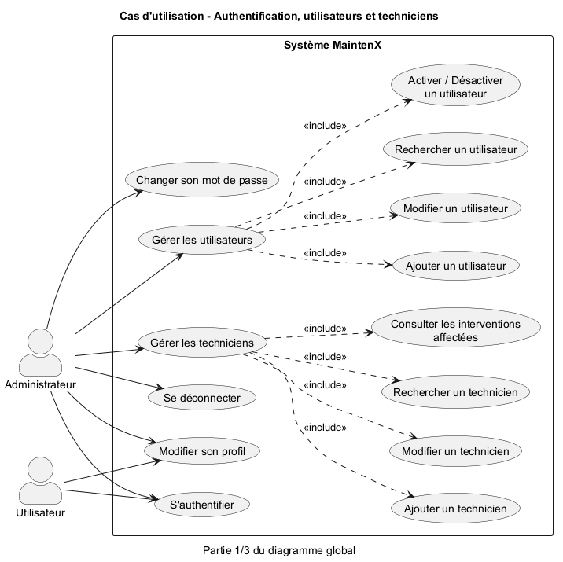
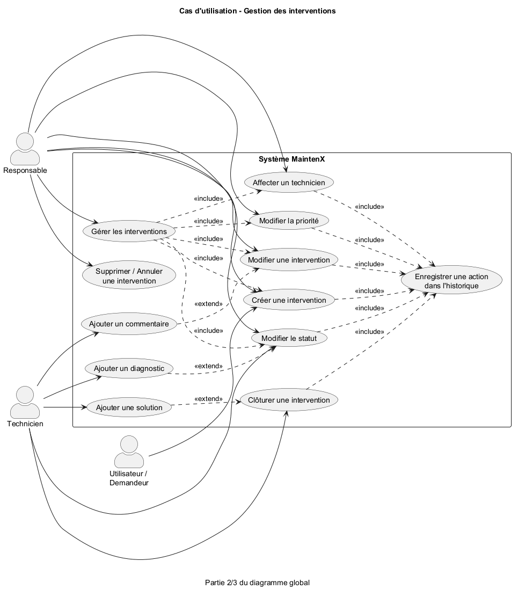
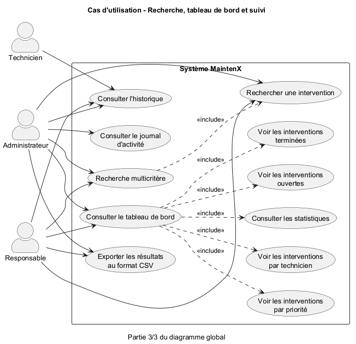
Pour faciliter encore la lecture, des diagrammes par acteur ont également été produits.
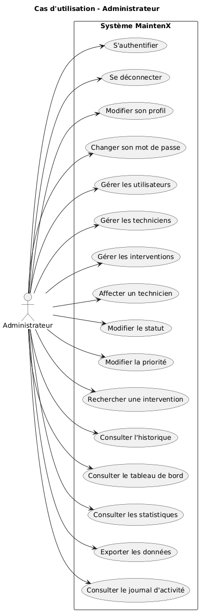
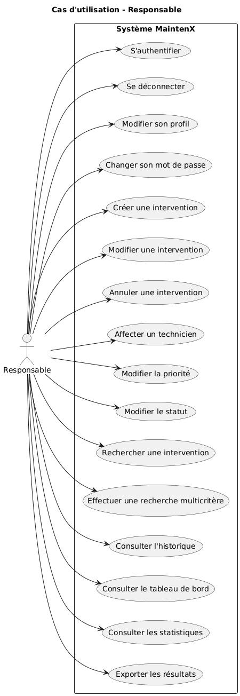
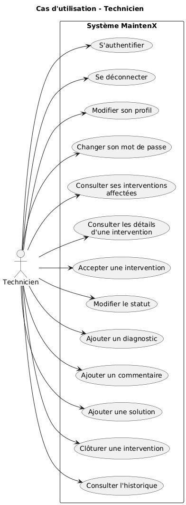
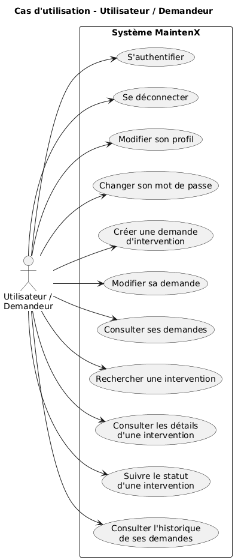
On note que le cas S'authentifier est préalable à toutes les autres interactions : l'authentification est donc la porte d'entrée du système. Les cas de gestion (utilisateurs, techniciens, interventions) incluent systématiquement l'enregistrement dans l'historique, ce qui matérialise l'exigence de traçabilité.
Le diagramme de classes représente la structure statique du système : les entités métier, leurs attributs, leurs associations et les interfaces qui définissent les contrats des couches.

Les classes métier principales sont :
Les enums Role, Priorite, StatutIntervention et Specialite permettent de limiter les valeurs possibles et d'éviter les incohérences.
| Classe / Interface | Rôle dans l'architecture |
|---|---|
| Utilisateur | Compte de connexion et demandeur potentiel |
| Technicien | Agent réalisant les interventions |
| Intervention | Entité centrale du domaine (demande de maintenance) |
| HistoriqueIntervention | Trace chronologique des actions sur une intervention |
| JournalActivite | Journal global des connexions et actions |
| GenericDAO<T, ID> | Contrat générique de persistance (CRUD) |
| UtilisateurService | Règles métier des comptes (unicité, désactivation) |
| InterventionService | Cycle de vie, affectation, statuts, coûts |
| AuthenticationService | Vérification des identifiants (BCrypt) et gestion de session |
| DashboardService | Calcul des statistiques du tableau de bord |
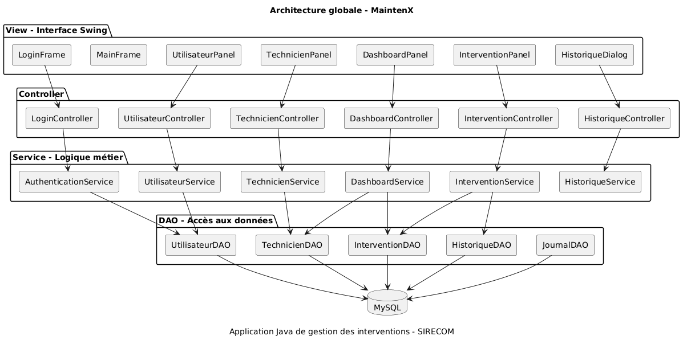


L'interface générique GenericDAO<T, ID> définit les opérations de base (create, update, delete, findById, findAll). Chaque DAO spécialisé étend ce contrat et ajoute ses méthodes propres (recherche, génération de référence, unicité…).
Les diagrammes de séquence décrivent l'enchaînement temporel des messages échangés entre les objets pour réaliser un cas d'utilisation. Les principaux scénarios sont présentés ci-après.
L'utilisateur saisit ses identifiants dans la LoginFrame. Le LoginController délègue la vérification à l'AuthenticationService, qui journalise la connexion puis ouvre la session dans la MainFrame. Le hachage BCrypt permet de comparer le mot de passe saisi avec le condensat stocké, sans jamais manipuler le mot de passe en clair.
Le responsable remplit le formulaire ; le InterventionPanel transmet l'objet au InterventionController, qui appelle la couche service. Le service valide les données, génère la référence unique, enregistre l'événement dans l'historique et renvoie l'intervention créée.
L'affectation vérifie d'abord l'éligibilité du technicien (actif et disponible) via le TechnicienService, met à jour le statut de l'intervention vers AFFECTEE, puis trace l'action dans l'historique.

Le changement de statut est soumis aux règles métier : la clôture (TERMINEE) impose une solution appliquée, l'annulation est possible tant que l'intervention n'est pas terminée. Chaque transition alimente l'historique.

L'analyse des diagrammes de séquence fait ressortir plusieurs propriétés importantes du système :
Cette conception garantit que l'application conserve un comportement cohérent même si de nouveaux points d'entrée (par exemple une future version web) sont ajoutés par la suite.
Une étape de relecture croisée a été menée en fin de conception afin de vérifier la cohérence entre les différents diagrammes : chaque cas d'utilisation important possède au moins un diagramme de séquence, chaque classe du diagramme de classes a une correspondance dans le MCD et dans l'implémentation, et chaque règle de gestion du cahier des charges est rattachée à un point de contrôle de la couche service. Cette revue a permis de détecter, en amont de l'implémentation, des incohérences de cardinalité (affectation d'un technicien sans vérification de disponibilité) qui ont été corrigées dans le modèle puis appliquées dans le code.
Le diagramme d'activité du cycle de vie d'une intervention représente le flot d'exécution depuis la création jusqu'à la clôture ou l'annulation.
Le diagramme d'états ci-dessous matérialise les transitions autorisées entre les six statuts possibles.
| Transition | Condition | Acteur autorisé |
|---|---|---|
| OUVERTE → AFFECTEE | Technicien actif et disponible sélectionné | Administrateur, Responsable |
| AFFECTEE → EN_COURS | Début de l'intervention | Technicien affecté |
| EN_COURS → EN_ATTENTE | Blocage (pièce, information) | Technicien affecté |
| EN_ATTENTE → EN_COURS | Levée du blocage | Technicien affecté |
| EN_COURS → TERMINEE | Solution appliquée obligatoire | Technicien affecté |
| OUVERTE → ANNULEE | Demande annulée | Administrateur, Responsable |

Le diagramme de composants montre la dépendance unidirectionnelle entre les couches : les vues Swing dépendent des contrôleurs, lesquels s'appuient sur les services métier, eux-mêmes adossés aux DAO qui communiquent avec MySQL via JDBC.

Le déploiement est simple : le JAR exécutable maintenx.jar est déployé sur le poste utilisateur et se connecte, par JDBC, à la base gestion_maintenance hébergée par un serveur MySQL. En mode démonstration, aucune connexion n'est requise, les données étant chargées en mémoire.
Le Modèle Conceptuel de Données formalise les entités et les associations de la base. Le modèle retenu comprend six entités : utilisateur, technicien, intervention, historique_intervention, journal_activite et parametre_application.
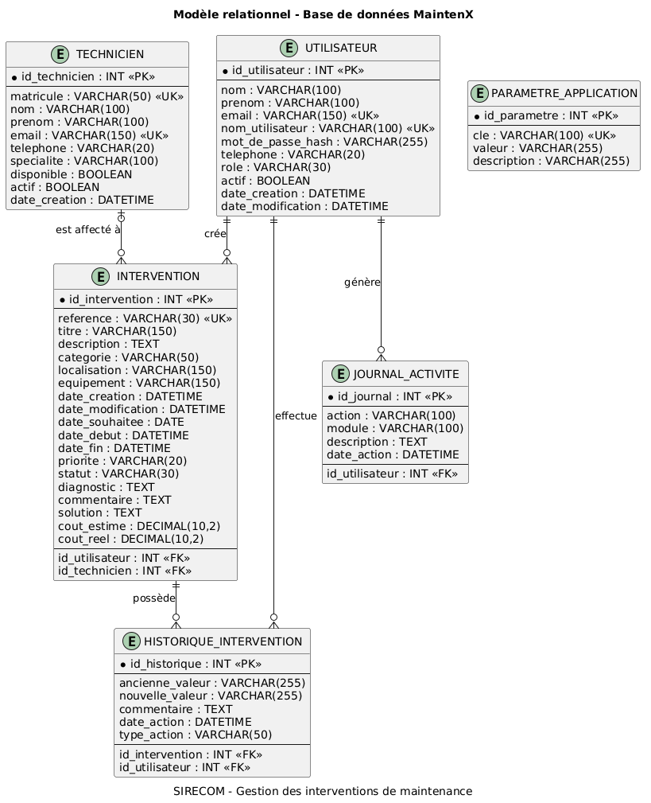
Les principales associations sont : un utilisateur peut émettre plusieurs interventions (demandeur), un technicien peut être affecté à plusieurs interventions, et une intervention possède plusieurs lignes d'historique. La cardinalité (0,1)-(0,n) sur l'affectation traduit le fait qu'une intervention peut ne pas encore avoir de technicien.
Le passage du MCD au schéma relationnel applique les règles classiques de transformation : chaque entité devient une relation (table), et chaque association est matérialisée par une clé étrangère. Dans la notation retenue, la clé primaire est le premier attribut (elle serait soulignée dans la notation classique) et les clés étrangères sont précédées du symbole # :
UTILISATEUR (id, nom, prénom, email, nom_utilisateur, mot_de_passe_hash, rôle, téléphone, actif, date_creation, date_modification)TECHNICIEN (id, matricule, nom, prénom, email, téléphone, spécialité, disponible, actif, interventions_en_cours, date_creation)INTERVENTION (id, référence, titre, description, catégorie, localisation, équipement, date_creation, date_modification, date_souhaitée, date_début, date_fin, priorité, statut, #demandeur_id, #technicien_id, commentaire, diagnostic, solution_appliquée, coût_estimé, coût_réel)HISTORIQUE_INTERVENTION (id, #intervention_id, action, ancienne_valeur, nouvelle_valeur, utilisateur, date_action)JOURNAL_ACTIVITE (id, utilisateur, action, détails, date_action)PARAMETRE_APPLICATION (clé, valeur, date_modification)
Chaque relation possède une clé primaire (`id`, ou `clé` pour `parametre_application`). Les clés étrangères traduisent les associations du MCD : `demandeur_id` référence `utilisateur(id)` (un demandeur peut être à l'origine de plusieurs interventions), `technicien_id` référence `technicien(id)` (affectation d'un technicien), et `intervention_id` référence `intervention(id)` (traçabilité des actions). Aucune association plusieurs-à-plusieurs ne nécessite de table de liaison : le modèle reste simple et directement exploitable en SQL.
| Relation | Clé primaire | Clés étrangères (références) |
|---|---|---|
| utilisateur | id | — |
| technicien | id | — |
| intervention | id | demandeur_id → utilisateur(id) ; technicien_id → technicien(id) |
| historique_intervention | id | intervention_id → intervention(id) |
| journal_activite | id | — |
| parametre_application | clé | — |
Le dictionnaire de données complet est fourni dans la documentation technique. Les extraits ci-dessous décrivent les tables principales.
| Champ | Type | Contrainte | Description |
|---|---|---|---|
| utilisateur.id | BIGINT | PK, auto | Identifiant |
| utilisateur.email | VARCHAR(160) | UNIQUE | Adresse électronique |
| utilisateur.nom_utilisateur | VARCHAR(80) | UNIQUE | Identifiant de connexion |
| utilisateur.mot_de_passe_hash | VARCHAR(255) | Obligatoire | Condensat BCrypt |
| utilisateur.role | ENUM | Obligatoire | Rôle (ADMINISTRATEUR, RESPONSABLE, TECHNICIEN) |
| technicien.matricule | VARCHAR(40) | UNIQUE | Matricule |
| technicien.specialite | ENUM | Obligatoire | Domaine d'intervention |
| intervention.reference | VARCHAR(30) | UNIQUE | Référence INT-AAAA-NNNN |
| intervention.priorite | ENUM | INDEX | BASSE / MOYENNE / HAUTE / URGENTE |
| intervention.statut | ENUM | INDEX | Cycle de vie |
| intervention.cout_estime | DECIMAL(12,2) | >= 0 | Coût estimé |
| intervention.cout_reel | DECIMAL(12,2) | >= 0 (CHECK) | Coût réel |
| historique_intervention.action | VARCHAR(80) | Obligatoire | Action tracée |
| journal_activite.action | VARCHAR(100) | Obligatoire | Action globale |
Le schéma relationnel est directement déduit du MCD. Le script de création, fourni dans `database/schema.sql`, est rappelé ci-dessous pour la table centrale de l'application :
CREATE TABLE intervention ( id BIGINT PRIMARY KEY AUTO_INCREMENT, reference VARCHAR(30) NOT NULL UNIQUE, titre VARCHAR(180) NOT NULL, description TEXT NOT NULL, categorie VARCHAR(80) NOT NULL, localisation VARCHAR(160) NOT NULL, equipement VARCHAR(160), date_creation DATETIME NOT NULL DEFAULT CURRENT_TIMESTAMP, date_souhaitee DATE, date_debut DATETIME, date_fin DATETIME, priorite ENUM('BASSE','MOYENNE','HAUTE','URGENTE') NOT NULL DEFAULT 'MOYENNE', statut ENUM('OUVERTE','AFFECTEE','EN_COURS','EN_ATTENTE', 'TERMINEE','ANNULEE') NOT NULL DEFAULT 'OUVERTE', demandeur_id BIGINT, technicien_id BIGINT, diagnostic TEXT, solution_appliquee TEXT, cout_estime DECIMAL(12,2) NOT NULL DEFAULT 0, cout_reel DECIMAL(12,2) NOT NULL DEFAULT 0, CONSTRAINT fk_intervention_demandeur FOREIGN KEY (demandeur_id) REFERENCES utilisateur(id), CONSTRAINT fk_intervention_technicien FOREIGN KEY (technicien_id) REFERENCES technicien(id), CONSTRAINT chk_cout_reel CHECK (cout_reel >= 0), INDEX idx_intervention_statut(statut), INDEX idx_intervention_priorite(priorite)) ENGINE=InnoDB DEFAULT CHARSET=utf8mb4;Le jeu de caractères utf8mb4 et le moteur InnoDB garantissent le support des accents et l'intégrité référentielle. Des vues (`v_interventions_detaillees`, `v_dashboard_statut`) sont également définies pour simplifier l'exploitation des données (jointures demandeur/technicien, agrégats par statut).
Le script SQL complet (création des tables, clés étrangères, index, vues) est fourni dans le dossier `database/` du projet et reproduit en annexe.
Le choix des technologies a été guidé par les contraintes du cahier des charges (application de bureau, coût nul de licence, écosystème Java maîtrisé) et par l'objectif de maintenabilité.
| Catégorie | Technologie / Outil | Rôle |
|---|---|---|
| Langage | Java 25 (OpenJDK Temurin) | Langage principal de l'application |
| Bibliothèque graphique | Java Swing + FlatLaf | Interface utilisateur et thème moderne (clair/sombre) |
| Persistance | JDBC (java.sql) | Accès aux données et aux requêtes préparées |
| SGBD | MySQL 8 (InnoDB, utf8mb4) | Stockage relationnel |
| Sécurité | jBCrypt | Hachage et vérification des mots de passe |
| Build | Maven 3.9 + plugin Shade | Compilation, tests, packaging JAR exécutable |
| Tests | JUnit 5 (Jupiter) | Tests unitaires automatisés |
| Modélisation | PlantUML | Diagrammes UML (cas d'utilisation, classes, séquences…) |
| IDE | VS Code / IntelliJ IDEA | Édition et débogage |
| Documentation | Markdown | Documentation technique et utilisateur |
L'environnement d'exécution cible est un poste Windows équipé d'un JRE 25. La base MySQL peut être fournie par une installation locale (XAMPP ou MySQL Server) ou distante.
Les choix retenus résultent d'un arbitrage entre le cahier des charges, les contraintes de l'entreprise et les bonnes pratiques :
Le compromis obtenu est une application légère, installable sans serveur d'application et facile à faire évoluer.
MaintenX adopte une architecture multicouche qui sépare strictement les responsabilités : les vues n'appellent jamais directement les DAO, et toutes les règles métier sont centralisées dans les services.
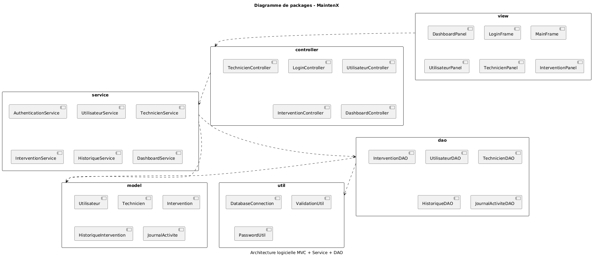
Le flux de contrôle est le suivant : Vue (Swing) → Contrôleur → Service → DAO → MySQL. Ce découpage apporte plusieurs bénéfices : testabilité (les services se testent sans interface graphique), maintenabilité (chaque couche évolue indépendamment), et sécurité (les validations ne dépendent pas de l'interface).
gestion-interventions-maintenance/├── pom.xml # Configuration Maven├── database/ # Scripts SQL (schema, données, vues)├── docs/ # Documentation (technique, utilisateur, tests, UML)├── uml/ # Diagrammes UML exportés└── src/ ├── main/java/com/maintenx/ │ ├── Main.java # Point d'entrée │ ├── model/ + model/enums/ # Entités métier et énumérations │ ├── view/ # Frames, panneaux, dialogues, composants │ ├── controller/ # Contrôleurs (Login, Intervention, Utilisateur…) │ ├── service/ + service/impl/ # Interfaces et implémentations métier │ ├── dao/ + dao/impl/ # Contrats de persistance et implémentations JDBC │ ├── util/ # Connexion, config, hachage, erreurs │ ├── validation/ # Validations réutilisables │ └── exception/ # Exceptions métier ├── main/resources/ # Fichier de configuration (config.properties) └── test/java/ # Tests unitaires JUnit 5
La classe `Main` initialise l'application : application du thème FlatLaf, chargement des préférences utilisateur, création du magasin de données et des services, puis affichage de l'écran de connexion.
public class Main { public static void main(String[] args) { FlatLightLaf.setup(); // thème par défaut AppPreferences.load(); // préférences (thème, fenêtre) var store = DemoDataFactory.createStore(); // données démo var journal = new JournalActiviteServiceImpl(store); var services = Services.factory(store, journal); new LoginFrame(services).setVisible(true); }}En mode démonstration, `DemoDataFactory` peuple un `InMemoryStore` avec des utilisateurs, des techniciens et des interventions cohérents. Ce mode garantit une présentation fluide même en l'absence de serveur MySQL ; le branchement sur la base réelle est assuré par les DAO JDBC.
Les préférences (thème clair/sombre, dimensions de la fenêtre) sont enregistrées via `java.util.prefs`, ce qui permet de conserver les choix de l'utilisateur entre deux lancements.
La couche modèle regroupe les classes métier et les énumérations du domaine. Les classes utilisent des records et classes immuables partiellement, des accesseurs typés (par exemple `getCoutEstime()` renvoie `BigDecimal`) et des méthodes utilitaires de présentation comme `nomComplet()`.
// Extrait : modèle Intervention (champs principaux)public class Intervention { private Long id; private String reference; // INT-2026-0001 private String titre; private String description; private Priorite priorite; // BASSE, MOYENNE, HAUTE, URGENTE private StatutIntervention statut; // cycle de vie private LocalDateTime dateCreation; private BigDecimal coutEstime; private BigDecimal coutReel; private String diagnostic; private String solutionAppliquee; // + getters / setters}Les énumérations `Role`, `Priorite`, `StatutIntervention` et `Specialite` encodent les domaines de valeurs et évitent les erreurs de saisie à la source.
La couche service centralise les règles métier et les validations. Elle est définie par des interfaces (`AuthenticationService`, `UtilisateurService`, `TechnicienService`, `InterventionService`, `HistoriqueService`, `JournalActiviteService`, `DashboardService`, `ParametreService`, `ProfilService`) et implémentée dans le package `service.impl`. En mode démonstration, les implémentations s'appuient sur le magasin en mémoire `InMemoryStore` alimenté par `DemoDataFactory` ; des implémentations JDBC sont fournies pour la connexion MySQL.
| Service | Responsabilités principales |
|---|---|
| AuthenticationService | Vérification des identifiants (BCrypt), contrôle d'activité du compte |
| UtilisateurService | CRUD des comptes, unicité email/nom d'utilisateur, désactivation contrôlée |
| TechnicienService | CRUD des techniciens, unicité du matricule, gestion disponibilité |
| InterventionService | Cycle de vie, référence automatique, affectation, statuts, coûts |
| HistoriqueService | Enregistrement et consultation de l'historique d'une intervention |
| JournalActiviteService | Journal global des connexions et actions |
| DashboardService | Statistiques par statut et par priorité |
| ParametreService | Lecture/écriture des paramètres d'application |
| ProfilService | Données du compte connecté et changement de mot de passe |
// Extrait : règles de clôture dans InterventionServiceImplif (cible == StatutIntervention.TERMINEE) { if (intervention.getSolutionAppliquee() == null || intervention.getSolutionAppliquee().isBlank()) { throw new ValidationException( "La clôture exige une solution appliquée."); } intervention.setDateFin(LocalDateTime.now());}historique.add(intervention.getId(), "CHANGEMENT_STATUT", ancien, nouveau, acteur);Ce positionnement central présente deux avantages : les mêmes règles s'appliquent quel que soit le point d'entrée (interface graphique ou tests), et la logique métier reste indépendante de la présentation.
L'exemple suivant illustre la vérification des identifiants dans le service d'authentification. Le mot de passe saisi n'est jamais stocké ni comparé en clair : il est confronté au condensat BCrypt enregistré.
public Optional<Utilisateur> login(String username, String password) { return utilisateurs.findByUsername(username) .filter(Utilisateur::isActif) .filter(u -> PasswordHasher.verify(password, u.getMotDePasseHash())) .map(u -> { journal.log(u.getNomUtilisateur(), "CONNEXION", "Session ouverte"); return u; });}De même, le service du tableau de bord calcule les agrégats présentés sur l'écran d'accueil à partir des données métier :
public DashboardStats stats() { long ouvertes = interventions.countByStatus().get("OUVERTE"); Map<String, Long> parStatut = interventions.countByStatus(); Map<String, Long> parPriorite = interventions.countByPriority(); return new DashboardStats(parStatut, parPriorite);}La couche DAO (Data Access Object) isole la persistance. L'interface générique `GenericDAO<T, ID>` définit les opérations communes, et chaque DAO spécialisé étend ce contrat :
| Interface | Méthodes spécifiques |
|---|---|
| UtilisateurDAO | findByUsername, existsByEmail, existsByUsername |
| TechnicienDAO | existsByMatricule |
| InterventionDAO | search(criteria), nextReference |
| HistoriqueInterventionDAO | findByInterventionId |
| DashboardDAO | countByStatus, countByPriority |
| ParametreDAO | findAll, save |
| JournalActiviteDAO | (CRUD générique) |
Les implémentations JDBC utilisent exclusivement des PreparedStatement (protection contre l'injection SQL) et gèrent la génération des clés auto-incrémentées :
// Extrait : insertion JDBC avec génération de cléString sql = "INSERT INTO intervention(reference, titre, ...) " + "VALUES (?, ?, ...)";try (PreparedStatement ps = conn.prepareStatement(sql, Statement.RETURN_GENERATED_KEYS)) { ps.setString(1, intervention.getReference()); // ... autres paramètres ps.executeUpdate();}L'exemple suivant montre le contrôle d'unicité de l'email lors de la création d'un utilisateur :
public boolean existsByEmail(String email) { String sql = "SELECT COUNT(*) FROM utilisateur WHERE email = ?"; try (PreparedStatement ps = connection.prepareStatement(sql)) { ps.setString(1, email); try (ResultSet rs = ps.executeQuery()) { return rs.next() && rs.getInt(1) > 0; } }}Les ressources (connexions, instructions, résultats) sont systématiquement fermées dans des blocs `try-with-resources` afin d'éviter les fuites. Une classe utilitaire `DatabaseConnection` centralise l'obtention des connexions à partir des paramètres de configuration.
L'interface est construite avec Java Swing et embellie par FlatLaf. Elle comprend : la fenêtre de connexion (`LoginFrame`), la fenêtre principale (`MainFrame`) dotée d'une navigation latérale, et les panneaux métier (`DashboardPanel`, `UtilisateurPanel`, `TechnicienPanel`, `InterventionPanel`, `RecherchePanel`, `HistoriquePanel`, `JournalPanel`, `RapportPanel`, `ParametresPanel`, `ProfilPanel`).
Les composants réutilisables sont regroupés dans `view.components` (la classe utilitaire `Ui` fournit boutons, champs, tableaux stylés, entêtes), `view.dialogs` (formulaires d'ajout/modification) et `view.renderers` (coloration des statuts et priorités).
| Package | Contenu | Rôle |
|---|---|---|
| view.components | Ui, StatCard | Composants réutilisables et style commun |
| view.dialogs | InterventionFormDialog, UtilisateurFormDialog, TechnicienFormDialog, ChangerMotDePasseDialog… | Formulaires d'ajout/modification |
| view.renderers | StatusCellRenderer, PriorityCellRenderer | Couleurs des statuts et priorités dans les tableaux |
| view.panels | DashboardPanel, UtilisateurPanel, TechnicienPanel, InterventionPanel, RecherchePanel, HistoriquePanel, JournalPanel, RapportPanel, ParametresPanel, ProfilPanel | Écrans métier de la navigation |
| view | LoginFrame, MainFrame | Fenêtres de connexion et principale |
// Extrait : création de la navigation latérale dans MainFramenavPanel = new JPanel();navPanel.setLayout(new BoxLayout(navPanel, BoxLayout.Y_AXIS));for (NavItem item : items) { JButton btn = createNavButton(item); navPanel.add(btn); // bouton ajouté au panneau buttons.put(item, btn);}La fenêtre principale mémorise le thème (clair/sombre) et la taille de la fenêtre via `java.util.prefs`, pour un confort d'utilisation personnalisé.
La navigation latérale est adaptée au rôle de l'utilisateur connecté : un administrateur dispose de tous les écrans (utilisateurs, techniciens, interventions, recherche, historique, journal, rapports, paramètres), un responsable n'accède pas au journal d'activité ni à la gestion des comptes, tandis qu'un technicien ne voit que ses interventions affectées, leur historique et son profil. Cette restriction est appliquée à la fois dans la construction des menus et dans les contrôleurs, afin d'éviter tout contournement.
Les contrôleurs jouent le rôle d'adaptateurs : ils convertissent les événements de l'interface en appels aux services et remontent les résultats. Leur code reste volontairement fin, toute la logique résidant dans la couche service.
public class InterventionController { private final InterventionService service; // ... public Intervention create(Intervention i, Utilisateur acteur) { return service.create(i, acteur); } public void assign(long id, long technicienId, Utilisateur acteur) { service.assign(id, technicienId, acteur); } public List<Intervention> search(InterventionSearchCriteria c) { return service.search(c); }}Cette séparation permet notamment de tester les contrôleurs indépendamment de Swing et de remplacer un service par une implémentation de test lors des vérifications.
Cette section présente les écrans principaux de l'application, tels que capturés pendant la phase de tests fonctionnels sur les données de démonstration.
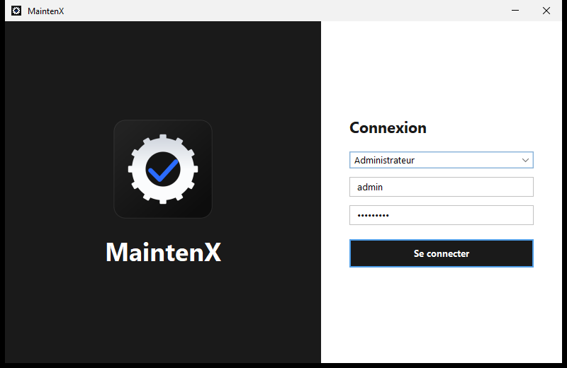
L'écran de connexion propose la saisie de l'identifiant et du mot de passe. Les comptes de démonstration sont fournis : administrateur (`admin`/`Admin123!`), responsable (`responsable`/`Resp123!`) et technicien (`tech`/`Tech123!`).
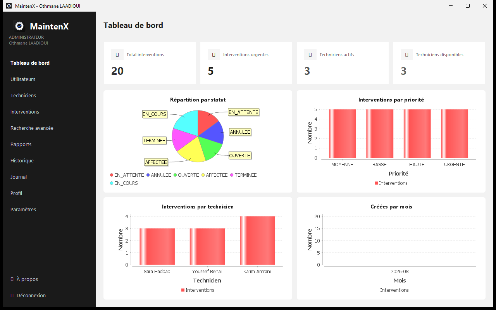
Le tableau de bord synthétise l'activité : nombre d'interventions par statut, répartition par priorité et indicateurs clés. Il donne au responsable une vision immédiate de l'état du parc.
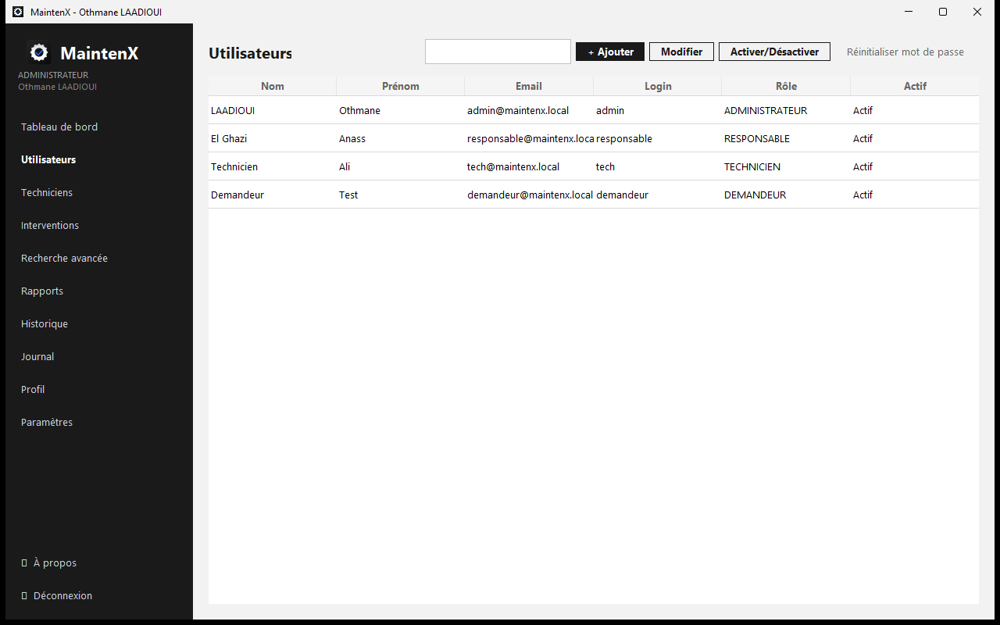
La gestion des utilisateurs permet d'ajouter, modifier, activer ou désactiver des comptes et de rechercher un utilisateur par nom, email ou nom d'utilisateur.
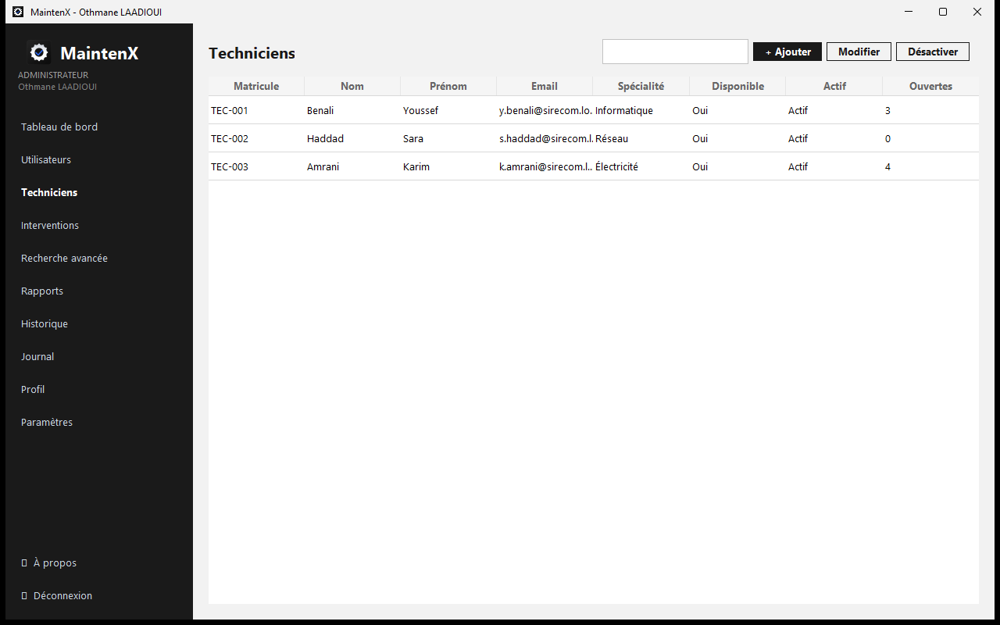
La gestion des techniciens présente le matricule, la spécialité, la disponibilité et le nombre d'interventions en cours de chaque agent. Seul l'administrateur y a accès.
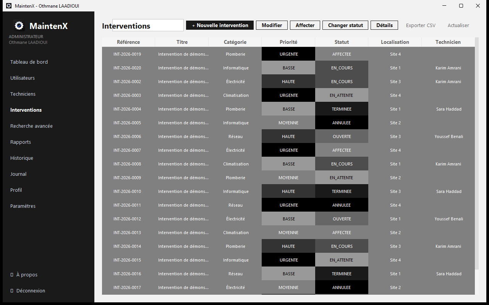
L'écran des interventions liste les demandes avec leur référence, priorité, statut et coûts. Depuis cet écran, le responsable peut créer, modifier, affecter ou annuler une intervention.
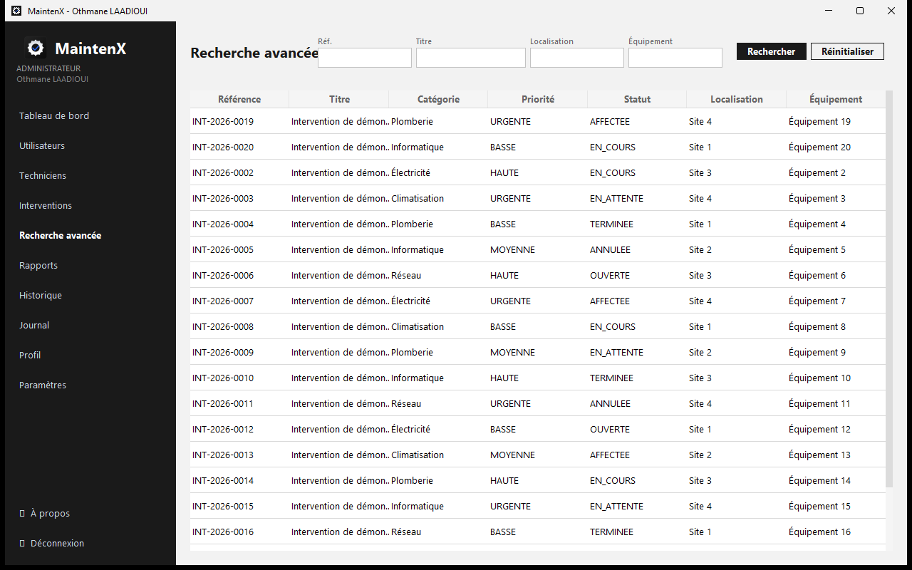
La recherche multicritère filtre les interventions selon plusieurs critères combinables (référence, statut, priorité, catégorie, localisation, dates, technicien, demandeur).
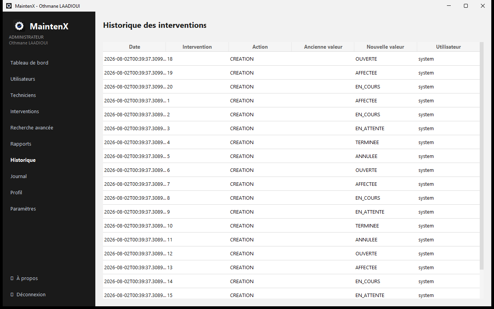
L'historique retrace chronologiquement toutes les actions : création, affectation, changement de statut, modification de priorité, clôture… Chaque ligne indique l'acteur, l'ancienne et la nouvelle valeur.
Le journal d'activité est réservé à l'administrateur : il consigne les connexions et les actions globales du système.
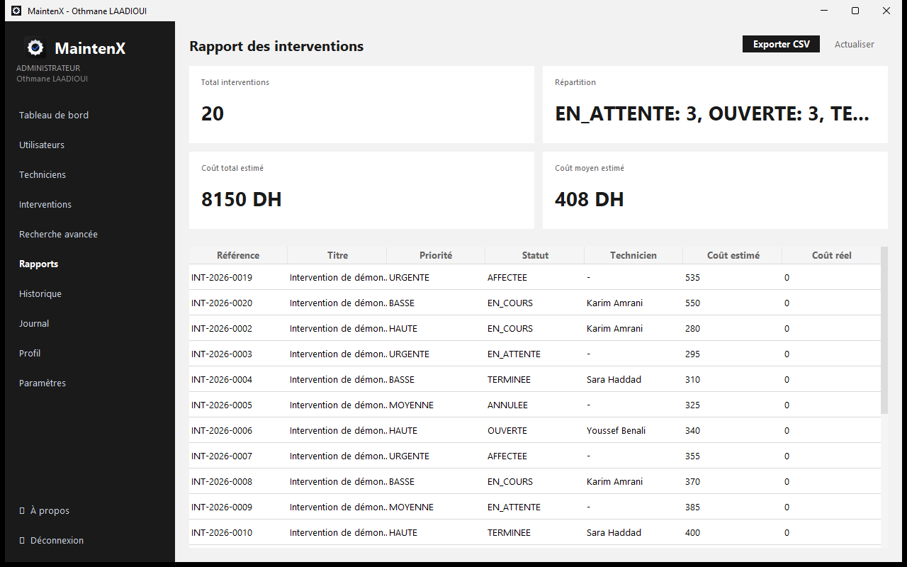
L'écran Rapport agrège le total d'interventions, leur répartition par statut, le coût total et le coût moyen estimés, et permet l'export CSV.
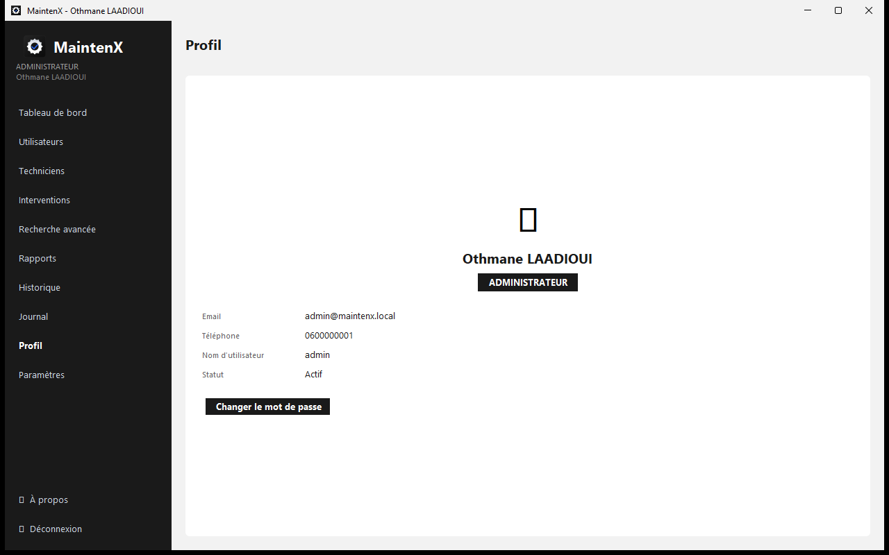
La page Profil permet à chaque utilisateur de consulter et modifier ses informations personnelles ainsi que son mot de passe.
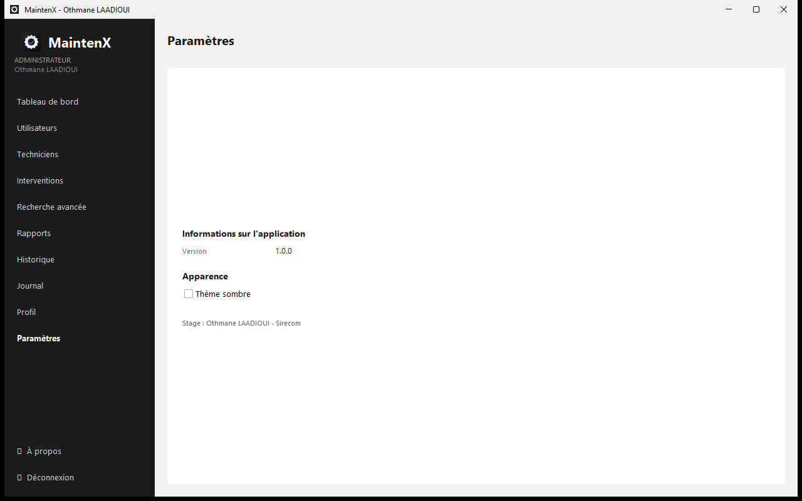
L'écran Paramètres affiche les informations de l'application (version) et permet de basculer entre le thème clair et le thème sombre.
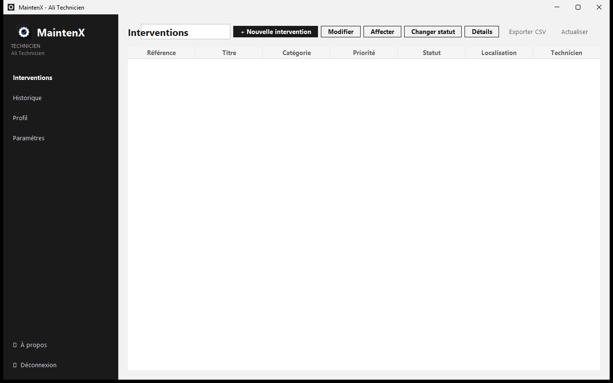
Connecté en tant que technicien, l'utilisateur ne voit que ses interventions affectées et dispose d'une navigation réduite (sans les pages de gestion réservées à l'administration), conformément au contrôle d'accès par rôle.
Pour illustrer le fonctionnement réel de l'application, décrivons un scénario complet mettant en jeu les trois rôles.
Ce parcours, répété pendant la phase de tests, confirme que l'application couvre bien l'intégralité du processus métier défini au chapitre 1.
La stratégie de test combine plusieurs niveaux de vérification :
La suite de tests couvre les classes et règles suivantes :
| Classe de test | Cas vérifiés |
|---|---|
| InputValidatorTest | Email valide/invalide, mot de passe trop court, montant négatif, dates non chronologiques, champ vide |
| PasswordHasherTest | Le condensat ne contient pas le mot de passe, vérification positive |
| ServiceRulesTest | Création utilisateur, refus des doublons, création d'intervention, affectation, refus d'un technicien inactif, clôture avec solution, refus de clôture sans solution, historique, auto-désactivation de l'administrateur |
| DaoContractTest | Présence des DAO JDBC pour l'intégration MySQL |
Exemple de test métier vérifiant le refus de clôture sans solution :
@Testvoid refusClotureSansSolution() { var i = ints.create(intervention(), admin); assertThrows(ValidationException.class, () -> ints.changeStatus(i.getId(), StatutIntervention.TERMINEE, "", admin));}L'exécution de la suite est intégrée au cycle Maven : `mvn clean test`. Le tableau ci-dessous synthétise les résultats obtenus.
| Critère | Résultat |
|---|---|
| Compilation du projet | Réussie (Java 25, Maven 3.9) |
| Tests unitaires | Tous verts (validations, règles métier, hachage) |
| Packaging JAR exécutable | Réussi (plugin Shade) - maintenx.jar |
| Lancement de l'application | Réussi (mode démonstration) |
| Navigation entre écrans | Corrigée et vérifiée |
| Connexion aux trois rôles | Vérifiée |
La classe `ServiceRulesTest` constitue le cœur de la validation métier. Chaque méthode vérifie un comportement précis :
| Méthode de test | Comportement vérifié |
|---|---|
| creationUtilisateurValide | Un utilisateur valide reçoit un identifiant > 0 |
| refusUtilisateurDuplique | Un email déjà utilisé déclenche DuplicateResourceException |
| creationIntervention | Une intervention créée a le statut OUVERTE et une référence |
| affectationTechnicien | L'affectation passe le statut à AFFECTEE et renseigne le technicien |
| refusTechnicienInactif | Affecter un technicien désactivé lève BusinessException |
| passageTermineAvecSolution | La clôture avec solution positionne TERMINEE et la date de fin |
| refusClotureSansSolution | Clôturer sans solution lève ValidationException |
| historiqueCree | Chaque action crée une ligne d'historique |
| administrateurNeSeDesactivePas | L'administrateur ne peut pas se désactiver lui-même |
Ces tests sont déterministes : ils s'appuient sur le magasin en mémoire et n'exigent ni base de données ni interface graphique, ce qui garantit leur exécution rapide et reproductible dans l'intégration continue.
La validation est répartie entre les couches afin de garantir la robustesse à tous les niveaux :
| Couche | Responsabilité de validation | Exemples |
|---|---|---|
| Présentation | Contrôles légers avant transmission | Champs obligatoires du formulaire |
| Validation | Validations génériques réutilisables | Email, téléphone, montant ≥ 0, dates chronologiques, mot de passe |
| Service | Règles métier et contrôle des droits | Technicien actif, solution obligatoire, unicité, auto-désactivation |
| DAO / Base | Contraintes d'intégrité | Clés étrangères, CHECK (cout_reel ≥ 0), UNIQUE, ENUM |
Le plan de tests fonctionnels (disponible dans `docs/tests/`) définit les parcours nominaux et les cas d'erreur attendus. Les principaux cas sont les suivants :
| Cas | Action | Résultat attendu |
|---|---|---|
| Connexion réussie | Saisir un identifiant/mot de passe valides | Ouverture de la fenêtre principale |
| Connexion refusée | Saisir un mot de passe erroné | Message d'erreur, accès refusé |
| Création d'un doublon | Créer un utilisateur avec un email existant | DuplicateResourceException |
| Affectation d'un technicien actif | Affecter un technicien disponible | Statut passé à AFFECTEE |
| Affectation d'un technicien inactif | Tenter d'affecter un technicien désactivé | BusinessException |
| Clôture sans solution | Passer au statut TERMINEE sans solution | ValidationException |
| Clôture avec solution | Saisir une solution puis clôturer | Statut TERMINEE, date de fin renseignée |
| Recherche multicritère | Combiner statut et priorité | Liste filtrée correcte |
| Export CSV | Cliquer sur Exporter CSV | Fichier généré |
La recette de l'application a été conduite avec les encadrants selon une checklist d'acceptation. Chaque point a été validé à partir de l'interface réelle, avec les trois comptes de démonstration.
| N° | Critère d'acceptation | Statut |
|---|---|---|
| R01 | Le lancement du JAR ouvre la fenêtre de connexion | Validé |
| R02 | Les trois rôles se connectent et accèdent aux bons écrans | Validé |
| R03 | Un mot de passe erroné bloque l'accès avec un message clair | Validé |
| R04 | Création, modification et désactivation d'un utilisateur | Validé |
| R05 | Création, modification et désactivation d'un technicien | Validé |
| R06 | Création d'une intervention avec référence automatique | Validé |
| R07 | Affectation d'un technicien et refus d'un technicien inactif | Validé |
| R08 | Suivi des statuts et clôture avec solution obligatoire | Validé |
| R09 | Recherche multicritère et historique | Validé |
| R10 | Tableau de bord, rapport et export CSV | Validé |
| R11 | Journal d'activité réservé à l'administrateur | Validé |
| R12 | Basculer le thème clair/sombre et le conserver au redémarrage | Validé |
L'ensemble des critères a été validé ; les anomalies constatées en cours de route (notamment l'affichage de la navigation latérale) ont été corrigées puis re-testées.
Les DAO JDBC ont été conçus pour être testés contre une base MySQL réelle. Le protocole d'intégration est le suivant : création de la base à partir de `database/schema.sql`, chargement des données de démonstration (`sample_data.sql`), puis exécution de scénarios de CRUD (insertion d'un utilisateur, génération d'une référence d'intervention, recherche multicritère, lecture de l'historique). L'objectif est de valider, en conditions réelles, les requêtes paramétrées et la génération des clés auto-incrémentées. Le test `DaoContractTest` vérifie par ailleurs la présence et l'instanciabilité des DAO JDBC dans le classpath.
Le branchement effectif des services sur ces DAO (au lieu du magasin en mémoire) constitue l'une des perspectives principales, avec pour bénéfice attendu la persistance durable des données de l'entreprise.
La documentation technique, livrée dans le dossier `docs/technical/`, comprend :
La robustesse de l'application repose sur une gestion centralisée des erreurs. Chaque couche lève des exceptions métier typées :
La classe utilitaire `ErrorHandler` affiche à l'utilisateur un message fonctionnel (sans trace technique complète) et enregistre les détails dans le fichier de log `logs/maintenx.log`. Cette séparation entre message présenté et trace technique est une exigence de sécurité : elle empêche la fuite d'informations internes vers l'utilisateur final tout en conservant une traçabilité complète pour la maintenance.
Le Manuel utilisateur (`docs/user/MANUEL_UTILISATEUR.md`) explique, de façon illustrée, comment se connecter, naviguer dans l'application, gérer les utilisateurs et les techniciens, créer et suivre une intervention, rechercher, consulter les statistiques et exporter les données. Il est rédigé à destination des trois profils d'utilisateurs.
Le déploiement suit la procédure simplifiée ci-dessous, détaillée dans le guide de déploiement :
Le packaging par le plugin Shade garantit que toutes les dépendances (FlatLaf, jBCrypt) sont incluses dans un unique JAR portable.
| Difficulté | Solution apportée |
|---|---|
| Structurer une application complète sans framework web | Adoption d'une architecture multicouche MVC + Service + DAO stricte, testable et évolutive |
| Absence de serveur MySQL lors de la soutenance | Mode démonstration en mémoire (DemoDataFactory) activé par défaut, DAO JDBC prêts pour la production |
| Gestion des dépendances et du packaging | Maven avec plugin Shade produisant un JAR unique exécutable |
| Sécurisation des mots de passe | Intégration de jBCrypt et exclusion de la configuration du dépôt Git |
| Cohérence des règles de statut | Centralisation des règles dans les services et tests unitaires dédiés |
Le projet MaintenX, réalisé au sein de la société SIRECOM, a permis de concevoir et de développer une application de gestion des interventions de maintenance répondant à la problématique posée : la gestion manuelle des demandes ne permettait ni un suivi fiable, ni une priorisation efficace, ni une traçabilité complète. L'application livrée couvre l'ensemble du cycle de vie d'une intervention, de la création à la clôture, en passant par l'affectation des techniciens, le suivi des statuts, l'historisation des actions et la production d'indicateurs.
Sur le plan technique, ce projet a été l'occasion de mettre en pratique les concepts fondamentaux du génie logiciel : analyse des besoins, modélisation UML, architecture multicouche, conception de bases de données relationnelles, programmation Swing, accès aux données avec JDBC et tests automatisés avec JUnit. La séparation stricte entre les couches a permis de produire un code testable et maintenable, et le mode démonstration garantit la présentation du produit en toutes circonstances.
Sur le plan professionnel, ce stage m'a permis de découvrir le fonctionnement d'une entreprise de services, de m'adapter à une équipe et de respecter des délais serrés. Les échanges réguliers avec les encadrants ont également contribué à améliorer la qualité du produit livré.
En regard des objectifs fixés dans l'introduction générale, le bilan est satisfaisant : la quasi-totalité des besoins fonctionnels du cahier des charges a été implémentée et validée, l'architecture multicouche est en place et testée, et l'application est livrée sous une forme exploitable et documentée. Les objectifs de sécurité (hachage BCrypt, messages d'erreur contrôlés) et de traçabilité (historique, journal) ont été atteints.
Le mode par défaut de l'application utilise un magasin de démonstration en mémoire. L'exploitation réelle nécessite d'activer la persistance MySQL : les DAO JDBC sont écrits et prêts, mais leur branchement effectif sur un serveur de production ainsi que la montée en charge restent à valider.
Ces perspectives peuvent être organisées en feuille de route : une version 1.1 à court terme (persistance MySQL active, rapport PDF, notifications e-mail), puis une version 2.0 à moyen terme (version web, pagination, graphiques temporels, sauvegarde automatique). Cette graduation permet d'échelonner les efforts et de livrer de la valeur de façon incrémentale.
Ce stage a été l'occasion de consolider et d'enrichir mes compétences :
En conclusion, MaintenX constitue une base solide et professionnelle qui répond aux objectifs fixés en début de stage et qui peut être étendue progressivement pour accompagner la croissance des besoins de l'entreprise.
-- Table utilisateur (extrait)CREATE TABLE utilisateur ( id BIGINT PRIMARY KEY AUTO_INCREMENT, nom VARCHAR(80) NOT NULL, prenom VARCHAR(80) NOT NULL, email VARCHAR(160) NOT NULL UNIQUE, nom_utilisateur VARCHAR(80) NOT NULL UNIQUE, mot_de_passe_hash VARCHAR(255) NOT NULL, role ENUM('ADMINISTRATEUR','RESPONSABLE','TECHNICIEN') NOT NULL, actif BOOLEAN NOT NULL DEFAULT TRUE, date_creation DATETIME NOT NULL DEFAULT CURRENT_TIMESTAMP) ENGINE=InnoDB DEFAULT CHARSET=utf8mb4;
-- Vue : interventions détailléesCREATE OR REPLACE VIEW v_interventions_detaillees ASSELECT i.reference, i.titre, i.statut, i.priorite, CONCAT(u.prenom,' ',u.nom) AS demandeur, CONCAT(t.prenom,' ',t.nom) AS technicienFROM intervention iLEFT JOIN utilisateur u ON u.id = i.demandeur_idLEFT JOIN technicien t ON t.id = i.technicien_id;| Rôle | Identifiant | Mot de passe |
|---|---|---|
| Administrateur | admin | Admin123! |
| Responsable | responsable | Resp123! |
| Technicien | tech | Tech123! |
| Terme | Définition |
|---|---|
| Intervention | Demande de maintenance traitée par l'application (création, affectation, suivi, clôture) |
| Statut | Position d'une intervention dans son cycle de vie (OUVERTE, AFFECTEE, EN_COURS, EN_ATTENTE, TERMINEE, ANNULEE) |
| Priorité | Niveau d'urgence d'une intervention (BASSE, MOYENNE, HAUTE, URGENTE) |
| Affectation | Désignation du technicien chargé de réaliser une intervention |
| Diagnostic | Analyse technique de la panne réalisée par le technicien |
| Solution appliquée | Description de la réparation réalisée (obligatoire pour la clôture) |
| Référence | Identifiant métier unique d'une intervention, au format INT-AAAA-NNNN |
| Historique | Trace chronologique des actions réalisées sur une intervention |
| Journal d'activité | Registre global des connexions et actions du système |
| Mode démonstration | Fonctionnement sans base de données, à partir d'un jeu de données en mémoire |
| JAR exécutable | Archive Java autonome, lançable avec la commande java -jar |
La connexion à la base de données est centralisée dans `src/main/resources/config.properties`. Ce fichier, ignoré par Git, contient les paramètres sensibles de l'application :
# Configuration MaintenXdb.url=jdbc:mysql://localhost:3306/gestion_maintenancedb.user=rootdb.password=app.name=MaintenXapp.version=1.0.0
La classe utilitaire `ConfigLoader` charge ce fichier au démarrage ; en cas d'absence, un fichier d'exemple (`config.properties.example`) est utilisé pour permettre la compilation sans configuration locale. Cette approche évite de versionner des secrets tout en garantissant le bon fonctionnement du processus de construction.
| Commande | Effet |
|---|---|
| mvn clean | Supprime les artefacts générés (dossier target/) |
| mvn compile | Compile les sources |
| mvn test | Exécute les tests unitaires |
| mvn package | Construit le JAR (y compris le JAR exécutable via Shade) |
| java -jar target/maintenx.jar | Lance l'application |